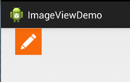
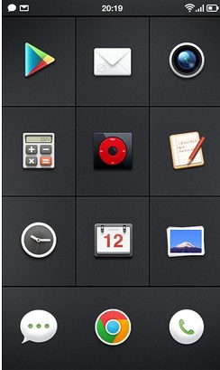
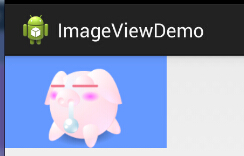
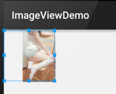
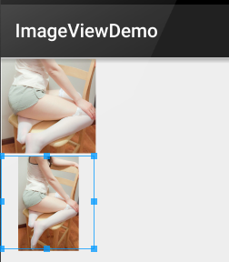
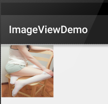
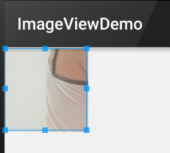
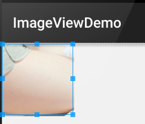

この節の導入：
この節で紹介するUI基本コンポーネントは：ImageView(画像ビュー)です。名前のとおり、画像を表示するためのViewまたはコントロールです！公式API:ImageView；この節で説明する内容は以下のとおりです：
- ImageViewのsrc属性とblackgroundの違い；
- adjustViewBoundsで画像ズーム時に縦横比に従うか設定する
- scaleTypeでズームタイプを設定
- 最も簡単な円形のImageViewの描画
1.src属性とbackground属性の違い：
APIドキュメントでは、ImageViewに画像を設定できる属性が2つあることがわかります。それぞれsrcとbackgroundです。
常識：
①backgroundが通常指すのは背景、一方srcが指すのは内容!!
②使用する場合src画像を埋め込むとき、画像サイズのまま直接埋め込まれ、そして伸縮されません
一方、backgroundで画像を埋め込む場合は、ImageViewに指定された幅に応じて伸縮されます
1)コードを書いて違いを検証する：
簡単なレイアウトを書いてテストしてみましょう：
<LinearLayout xmlns:android="http://schemas.android.com/apk/res/android"
xmlns:tools="http://schemas.android.com/tools"
android:id="@+id/LinearLayout1"
android:layout_width="match_parent"
android:layout_height="match_parent"
android:orientation="vertical"
tools:context="com.jay.example.imageviewdemo.MainActivity" >
<ImageView
android:layout_width="wrap_content"
android:layout_height="wrap_content"
android:background="@drawable/pen" />
<ImageView
android:layout_width="200dp"
android:layout_height="wrap_content"
android:background="@drawable/pen" />
<ImageView
android:layout_width="wrap_content"
android:layout_height="wrap_content"
android:src="@drawable/pen.html" />
<ImageView
android:layout_width="200dp"
android:layout_height="wrap_content"
android:src="@drawable/pen.html" />
</LinearLayout>
実行結果図は以下のとおりです：

結果分析：
幅も高さもwrap_contentなら同じで、元の画像サイズです。しかし、幅または高さを固定すると、違いは明らかになります。blackgroundはImageView全体を完全に埋めますが、srcは依然としてその大きさで、しかも中央に配置されます。これはImageViewのもう一つの属性scaleTypeに関係しています！もう一点、ここではwidthまたはheightだけを設定すると言いました。もしwidthとheightを同時に設定した場合、blackgroundは依然として埋めますが、srcのサイズは変わる可能性があります！例えば、次のコードをテストしてみましょう：
<ImageView
android:layout_width="100dp"
android:layout_height="50dp"
android:src="@drawable/pen.html" />
実行結果図：

PS:scaleTypeについては後で説明します～
2)blackgroundの引き伸ばしによる画像変形を解決する方法
前の効果図の2番目のImageViewでは、画像が引き伸ばされて変形しているのを見ることができます。正方形が長方形になっています。私のように軽い強迫症を持つ人にとっては、明らかに受け入れられません。設定する方法はないでしょうか？答えはもちろんあります。筆者が今知っているのは以下の2つの方法です：
これは動的にImageViewをロードする場合に適用できます。コードも簡単で、Viewを追加するときにサイズをハードコーディングするだけです。
LinearLayout.LayoutParams layoutParam = new LinearLayout.LayoutParams(48, 48); layout.addView(ibtnPen, layoutParam);動的なviewのロード以外に、多くの場合、XMLレイアウト方式でImageViewを導入します。解決方法も難しくありません。drawableのBitmapリソースファイルを使って、blackground属性をそのファイルに設定するだけです！このXMLファイルはdrawableフォルダーの下に作成します。このフォルダーは自分で作成する必要がありますよ！
pen_bg.xml:
<bitmap
xmlns:android="http://schemas.android.com/apk/res/android"
android:id="@id/pen_bg"
android:gravity="top"
android:src="@drawable/pen.html"
android:tileMode="disabled" >
</bitmap>
上記のコードは理解しにくくはありません。みんなが最も困惑するのはtitleMode属性でしょうか。この属性はタイル表示です。Windowsで背景を設定するときのタイル表示で、複数の小さいアイコンが画面全体に敷き詰められます！覚えましたか？覚えていなければ自分で試してみてください！disabledはそれを無効にするだけです！
つまり上記の簡単なコードです。呼び出し方法は以下のとおりです：
動的： ibtnPen.setBacklgroundResource(R.drawable.penbg);
静的： android:background = "@drawable/penbg"
3)透明度の設定の問題
前述の2つの違いを説明したところで、次にsetAlpha属性について説明します。これはとても簡単で、この属性は、srcのときだけ効果があります！！
4)両者の組み合わせの妙用：
ネット上の画像：

一見するとシンプルなGridViewで、各itemはImageViewですが、注意深い方はお気づきかもしれません。上のICONはどれも規則的ではなく、円形、角丸長方形などです。そこでここではsrc + backgroundを使っています！上記の効果を実現するには、2つの操作だけが必要です：透明なpng画像を用意する + 黒い背景を設定する(もちろんpngの透明度を設定しても実現できますが、結果は予想と異なるかもしれませんよ！) 簡単な例を書いてみましょう：

図のように、かわいらしい子豚がこのようにImageViewに表示されました。はは、blackgroundに青い背景を設定しました！
実装コード：
<ImageView
android:layout_width="150dp"
android:layout_height="wrap_content"
android:src="@drawable/pig.html"
android:background="#6699FF" />
PS: もちろんselctorを使ってクリック効果を実現することもできます。状況に応じて異なる画像を設定し、クリックやタッチの効果を実現できます！
5)Javaコードでblackgroundとsrc属性を設定する：
前景(src属性に対応)：setImageDrawable( );
背景(background属性に対応)：setBackgroundDrawable( );
2.adjustViewBoundsで拡大縮小時に元の画像の縦横比を保持するかどうかを設定する
ImageViewは私たちにadjustViewBoundsズーム時に元の画像の縦横比を保持するかどうかを設定するための属性を提供しています！maxWidth和maxHeight単独で設定しても効果がなく、
- 属性と一緒に使用する必要があります！そして後者の2つの属性は
- もadjustViewBoundsがtrueの場合にのみ有効になります～
コード例：
<LinearLayout xmlns:android="http://schemas.android.com/apk/res/android"
xmlns:tools="http://schemas.android.com/tools"
android:layout_width="match_parent"
android:layout_height="match_parent"
android:orientation="vertical"
tools:context=".MainActivity">
<!-- 正常的图片 -->
<ImageView
android:id="@+id/imageView1"
android:layout_width="wrap_content"
android:layout_height="wrap_content"
android:layout_margin="5px"
android:src="@mipmap/meinv.html" />
<!-- 限制了最大宽度与高度,并且设置了调整边界来保持所显示图像的长宽比-->
<ImageView
android:id="@+id/imageView2"
android:layout_width="wrap_content"
android:layout_height="wrap_content"
android:layout_margin="5px"
android:adjustViewBounds="true"
android:maxHeight="200px"
android:maxWidth="200px"
android:src="@mipmap/meinv.html" />
</LinearLayout>
実行結果図：

結果分析：大きい方の画像は何も処理していない画像で、サイズは541374です。一方、下の方ではmaxWidthとmaxHeightを使用してImageViewの最大幅と高さを200pxに制限しています。つまり最大でも200までしか表示できませんadjustViewBounds = "true"200の画像です。さらに、もう一つ設定しました
3.scaleTypeでズームタイプを設定する
3.scaleTypeでズームタイプを設定する
- fitXYandroid:scaleTypeは、表示する画像をどのように拡大縮小または移動してImageViewのサイズに適合させるかを設定するために使います。
- fitStartJavaコードではimageView.setScaleType(ImageView.ScaleType.CENTER);を使って設定できます～
- fitCenter選択可能な値は以下のとおりです：
- fitEnd：画像の横方向と縦方向を独立して拡大縮小し、画像がImageViewに完全に適合するようにします。ただし、画像の縦横比は変わる可能性があります。
- center：縦横比を維持して画像を拡大縮小し、長い辺がImageViewの辺と等しくなるまで行い、拡大縮小後に画像をImageViewの左上隅に配置します。
- centerCrop：同上、拡大縮小後は中央に配置します；
- centerInside：同上、拡大縮小後は右下隅に配置します；
- matrix：元の画像のサイズを保持し、ImageViewの中央に表示します。元の画像のサイズがImageViewのサイズより大きい場合、はみ出した部分は切り取られます。
：縦横比を維持して画像を拡大縮小し、ImageViewを完全に覆うまで行います。画像が完全に表示されない場合があります。
1)1.fitEnd,fitStart,fitCenter
：縦横比を維持して画像を拡大縮小し、ImageViewが画像を完全に表示できるようにします。
：デフォルト値で、元の画像のサイズを変更せず、ImageViewの左上隅から元の画像を描画します。元の画像がImageViewを超える部分は切り取られます。
<!-- 保持图片的横纵比缩放,知道该图片能够显示在ImageView组件上,并将缩放好的图片显示在imageView的右下角 -->
<ImageView
android:id="@+id/imageView3"
android:layout_width="300px"
android:layout_height="300px"
android:layout_margin="5px"
android:scaleType="fitEnd"
android:src="@mipmap/meinv.html" />
次に、グループごとに比較していきましょう：

2)centerCropとcenterInside
- サンプルコード：
- 実行結果図：
2)centerCropとcenterInside
<ImageView
android:layout_width="300px"
android:layout_height="300px"
android:layout_margin="5px"
android:scaleType="centerCrop"
android:src="@mipmap/meinv.html" />
<ImageView
android:layout_width="300px"
android:layout_height="300px"
android:layout_margin="5px"
android:scaleType="centerInside"
android:src="@mipmap/meinv.html" />
centerCrop:縦横比に従って拡大縮小し、ImageView全体を完全に覆います。

3)fitXY
画像を比率を保たずにスケーリングし、View全体に画像を埋め込むことを目的とする
サンプルコード：
<ImageView
android:layout_width="300px"
android:layout_height="300px"
android:layout_margin="5px"
android:scaleType="fixXY"
android:src="@mipmap/meinv.html" />
実行結果図：

まあ、明らかに潰れたね=-=~
4)matrix
ImageViewの左上隅から元画像を描画し、元画像がImageViewを超える部分はクロップ処理する
サンプルコード：
<ImageView
android:layout_width="300px"
android:layout_height="300px"
android:layout_margin="5px"
android:scaleType="matrix"
android:src="@mipmap/meinv.html" />
実行結果図：

5)center
元画像のサイズを維持し、ImageViewの中央に表示する。元画像のサイズがImageViewのサイズより大きい場合、はみ出した部分は切り取られる
サンプルコード：
<ImageView
android:layout_width="300px"
android:layout_height="300px"
android:layout_margin="5px"
android:scaleType="center"
android:src="@mipmap/meinv.html" />
実行結果図：

4.最も簡単な円形のImageViewの描画
円形や角丸のImageViewには皆さんお馴染みでしょう。最近の多くのアプリは円形のアバターを好んで使っていますよね〜
ここでは簡単な円形のImageViewを書いてみます。もちろんこれはあくまでサンプルであり、パフォーマンスやアンチエイリアシングを考慮していません！！！
まあ遊びで書いたようなものです。実際のプロジェクトでは、GitHubの達人が書いたカスタムビューを使うことを検討しましょう。例えば以下の2つです：
gitの使い方は前の章で説明しましたね。プロジェクトをクローンして、関連ファイルを自分のプロジェクトにコピーするだけでOKです〜
サンプルコード：
実行結果図：

実装コード：
カスタムImageView：**RoundImageView.java
package com.jay.demo.imageviewdemo;
import android.content.Context;
import android.graphics.Bitmap;
import android.graphics.Canvas;
import android.graphics.Paint;
import android.graphics.PaintFlagsDrawFilter;
import android.graphics.Path;
import android.graphics.Rect;
import android.graphics.Region;
import android.util.AttributeSet;
import android.widget.ImageView;
/**
* Created by coder-pig on 2015/7/18 0018.
*/
public class RoundImageView extends ImageView {
private Bitmap mBitmap;
private Rect mRect = new Rect();
private PaintFlagsDrawFilter pdf = new PaintFlagsDrawFilter(0, Paint.ANTI_ALIAS_FLAG);
private Paint mPaint = new Paint();
private Path mPath=new Path();
public RoundImageView(Context context, AttributeSet attrs) {
super(context, attrs);
init();
}
//传入一个Bitmap对象
public void setBitmap(Bitmap bitmap) {
this.mBitmap = bitmap;
}
private void init() {
mPaint.setStyle(Paint.Style.STROKE);
mPaint.setFlags(Paint.ANTI_ALIAS_FLAG);
mPaint.setAntiAlias(true);// 抗锯尺
}
@Override
protected void onDraw(Canvas canvas) {
super.onDraw(canvas);
if(mBitmap == null)
{
return;
}
mRect.set(0,0,getWidth(),getHeight());
canvas.save();
canvas.setDrawFilter(pdf);
mPath.addCircle(getWidth() / 2, getWidth() / 2, getHeight() / 2, Path.Direction.CCW);
canvas.clipPath(mPath, Region.Op.REPLACE);
canvas.drawBitmap(mBitmap, null, mRect, mPaint);
canvas.restore();
}
}
レイアウトコード：activity_main.xml:
<com.jay.demo.imageviewdemo.RoundImageView
android:id="@+id/img_round"
android:layout_width="200dp"
android:layout_height="200dp"
android:layout_margin="5px"/>
MainActivity.java:
package com.jay.demo.imageviewdemo;
import android.graphics.Bitmap;
import android.graphics.BitmapFactory;
import android.os.Bundle;
import android.support.v7.app.AppCompatActivity;
public class MainActivity extends AppCompatActivity {
private RoundImageView img_round;
@Override
protected void onCreate(Bundle savedInstanceState) {
super.onCreate(savedInstanceState);
setContentView(R.layout.activity_main);
img_round = (RoundImageView) findViewById(R.id.img_round);
Bitmap bitmap = BitmapFactory.decodeResource(getResources(),R.mipmap.meinv);
img_round.setBitmap(bitmap);
}
}
この節のまとめ：
本節ではImageView(画像ビュー)について解説しました。内容は多く見えますが、いずれも詳細な説明であり、知っておくだけで十分です。最後のカスタム円形ImageViewも、遊びで書いただけのものです。実際のプロジェクトでは、あの2つのサードパーティ製カスタムビューを使用することをお勧めします。
クリックしてノートを共有
ノートは本記事の内容の拡張である必要があります！
記事投稿は、こちらをクリック
登録招待コードの取得方法
ノートを共有する前にログインする必要があります！
登録招待コードの取得方法